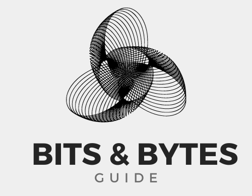

A multiplexer is a combinational circuit that has 2n input lines and a single output line. Simply, the multiplexer is a multi-input and single-output combinational circuit. The binary information is received from the input lines and directed to the output line. On the basis of the values of the selection lines, one of these data inputs will be connected to the output.
Unlike encoder and decoder, there are n selection lines and 2n input lines. So, there is a total of 2N possible combinations of inputs. A multiplexer is also treated as Mux.
There are various types of the multiplexer which are as follows:
1. 2x1
2. 4x1
3. 8x1
4. 16x1
A De-multiplexer is a combinational circuit that has only 1 input line and 2N output lines. Simply, the multiplexer is a single-input and multi-output combinational circuit. The information is received from the single input lines and directed to the output line. On the basis of the values of the selection lines, the input will be connected to one of these outputs. De-multiplexer is opposite to the multiplexer.
Unlike encoder and decoder, there are n selection lines and 2n outputs. So, there is a total of 2n possible combinations of inputs. De-multiplexer is also treated as De-mux.
There are various types of the demultiplexer which are as follows:
1. 1x2
2. 1x4
3. 1x8
4. 1x16